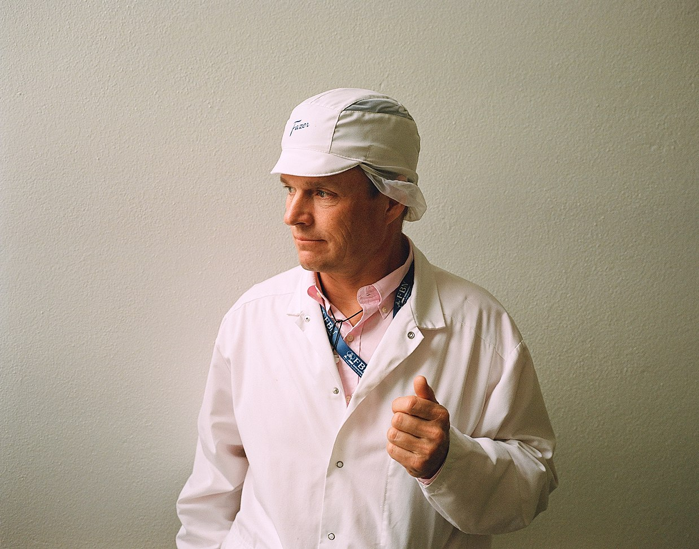
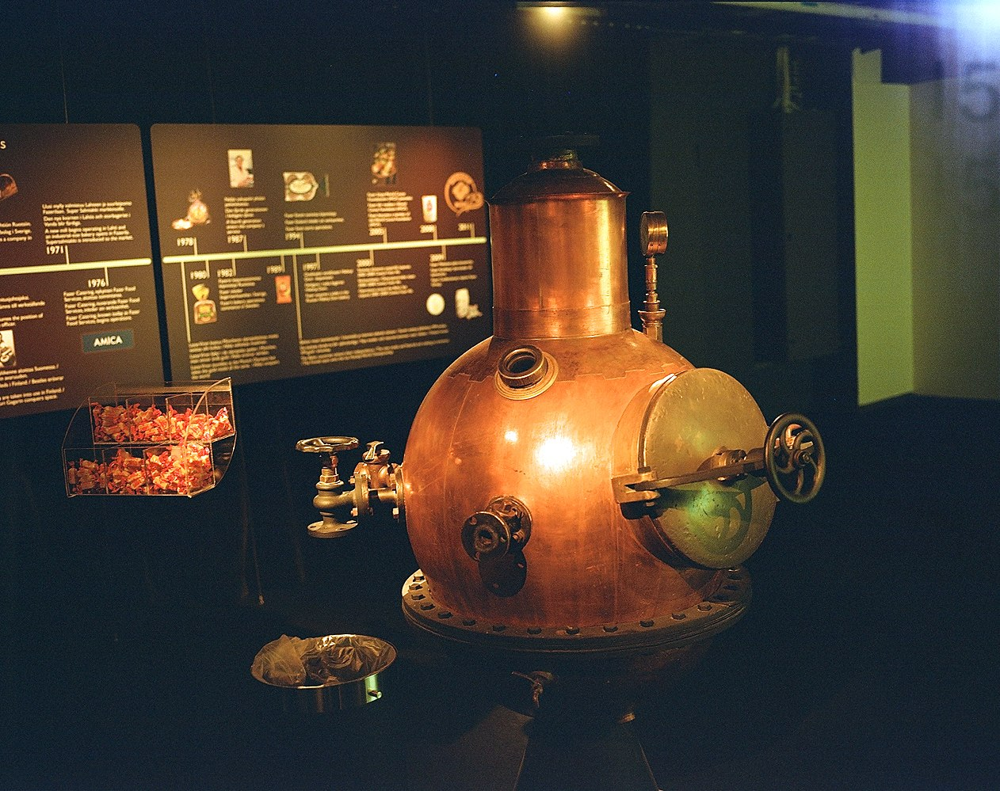
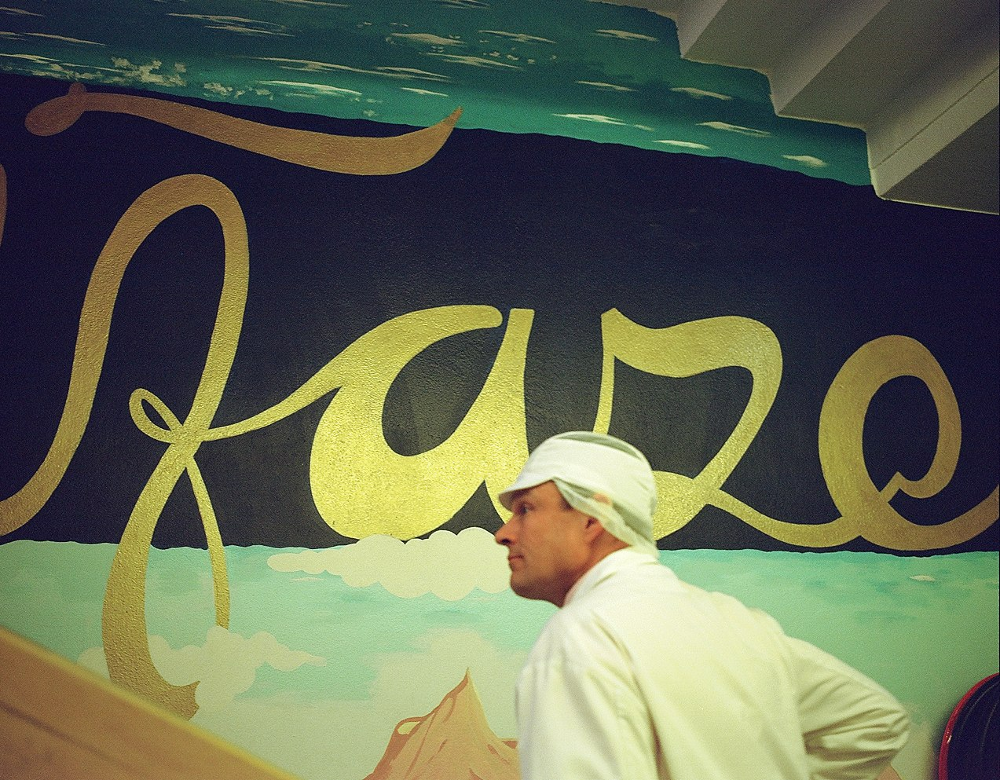
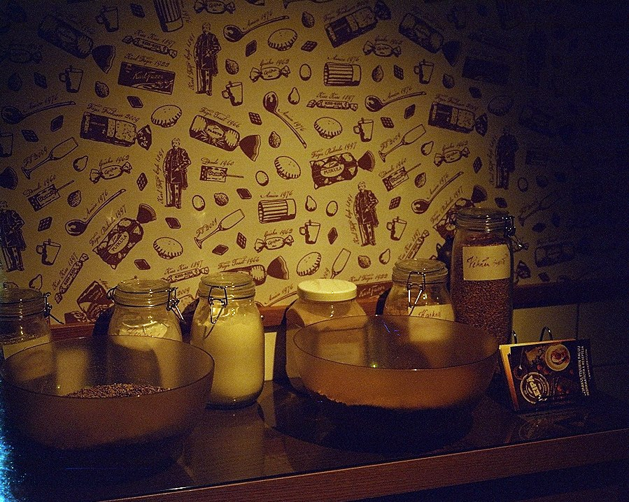
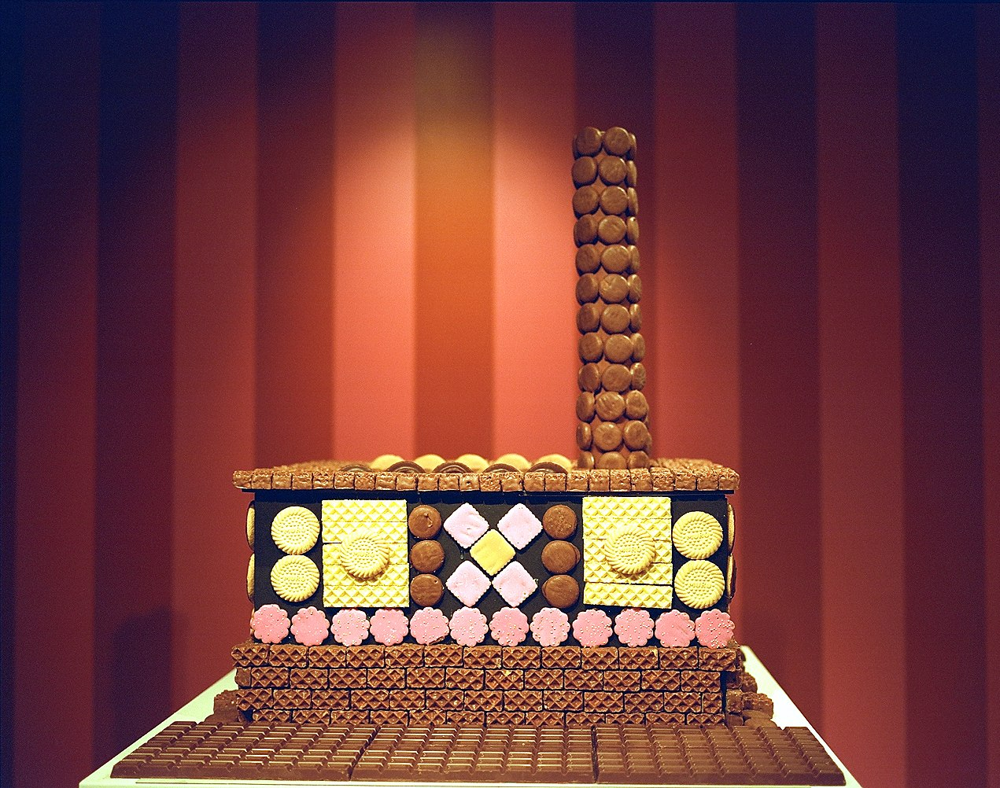
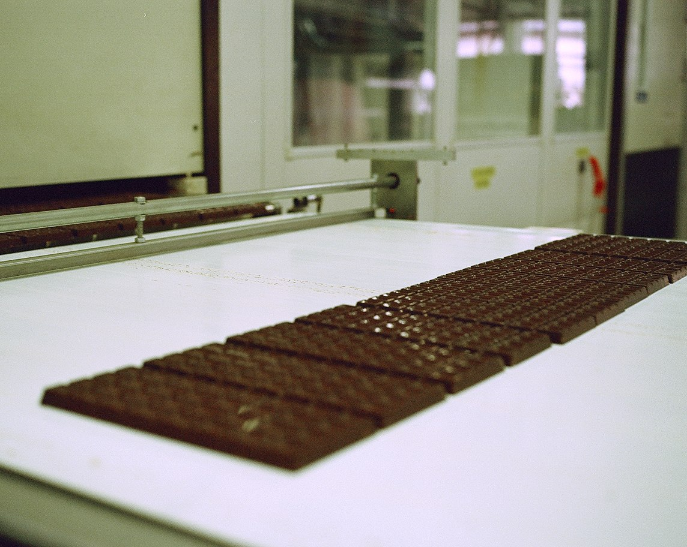
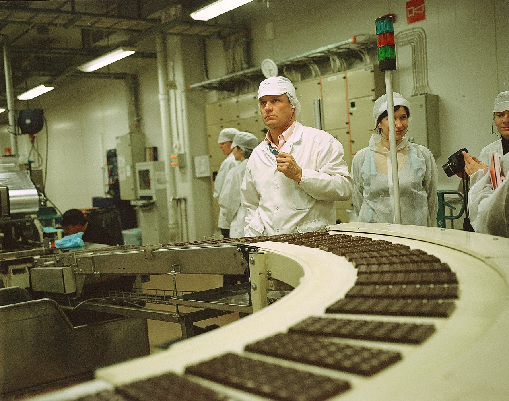
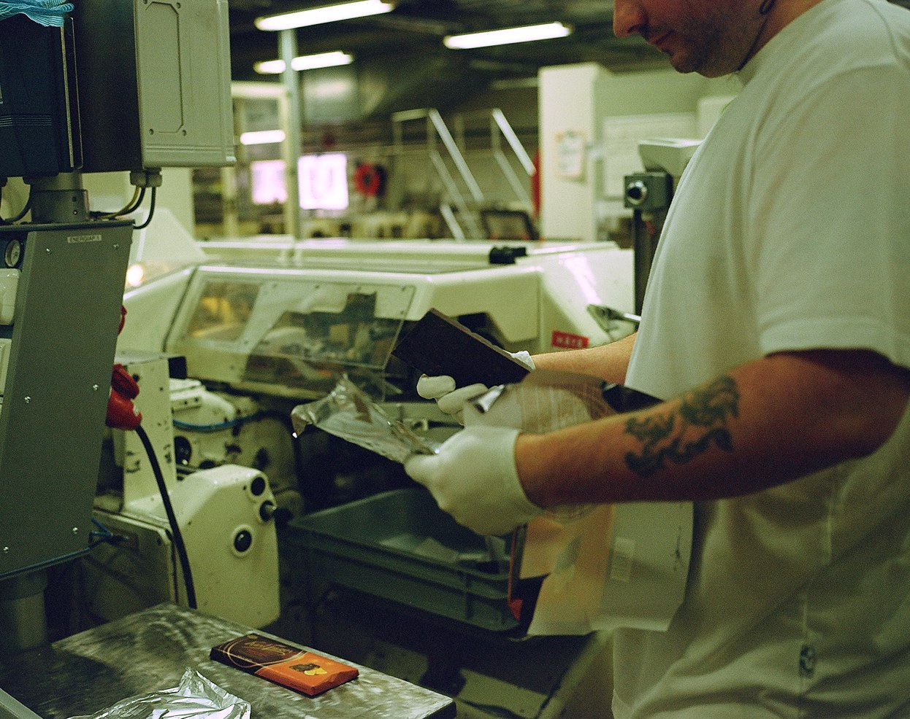
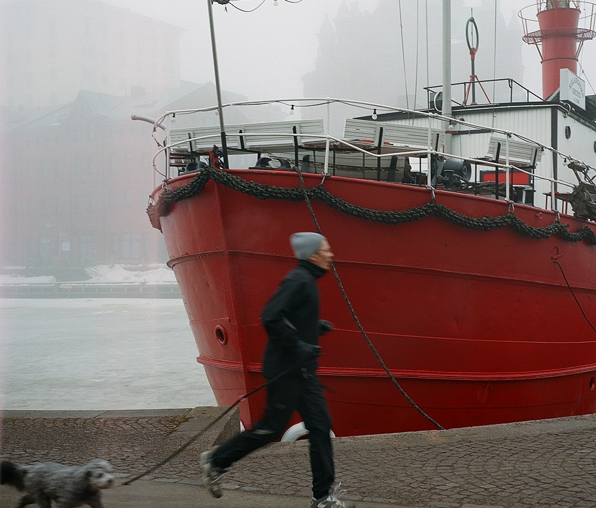

Фотографии
Как делают шоколад

Fazer
Хельсинки — это не только лакричные конфеты, лососевая икра и бары братьев Каурисмяки, Хельсинки — это вотчина шоколадной империи Fazer. Карл Фацер показал нам, как устроено предприятие, основанное еще его прадедом.

Fazer
Старинное шоколадное оборудование, выставленное в музее и линия времени на стене напоминают о стодвадцателетней истории фабрики.

Fazer
Карл Фацер возглавил семейную фабрику только что — в январе 2013 года, хотя уже в юности работал в кафе на улице Клуувикат

Fazer
Хлеб из ржаной муки — очень важный для финнов продукт. Стенд музея про муку, используемую в производстве хлеба.

Fazer
В музее на фабрике выставлены такие архитектурно-пряничные формы.

Fazer
Завораживающее зрелище — выход готовых плиток шоколада из соседнего цеха.

Fazer
Финальная дооберточая часть шоколадной линии. Главные принципы в производстве: никакого сухого молока и по-возможности только финские ингредиенты.

Fazer
Рядом с контролером стоит огромная коробка с обломками шоколада. Бракованным шоколадом угощают животных на дружественных фабрике свинофермах.

Fazer
Один из главных лендмарков города — плавучий маяк, в котором сейчас располагается ресторан, постороен в конце девяностых годов XIX века. Тогда же и открылась кондитерская Карла Фацера на улице Клуувикату.